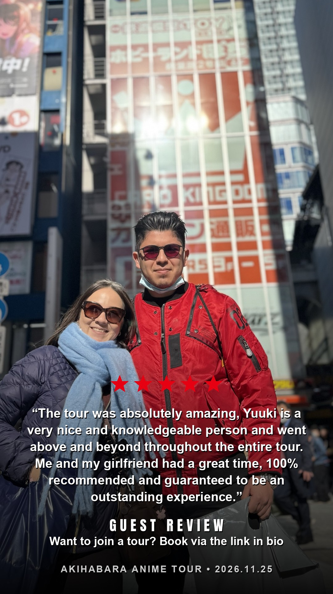
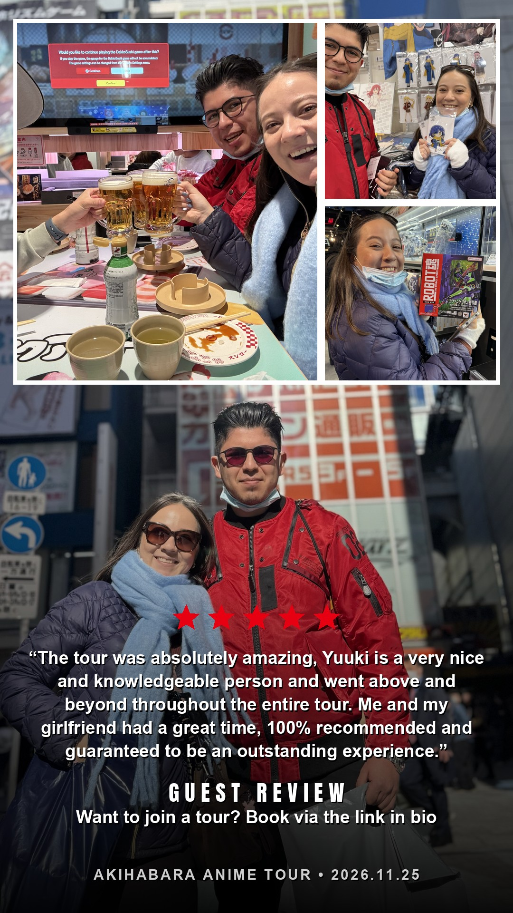
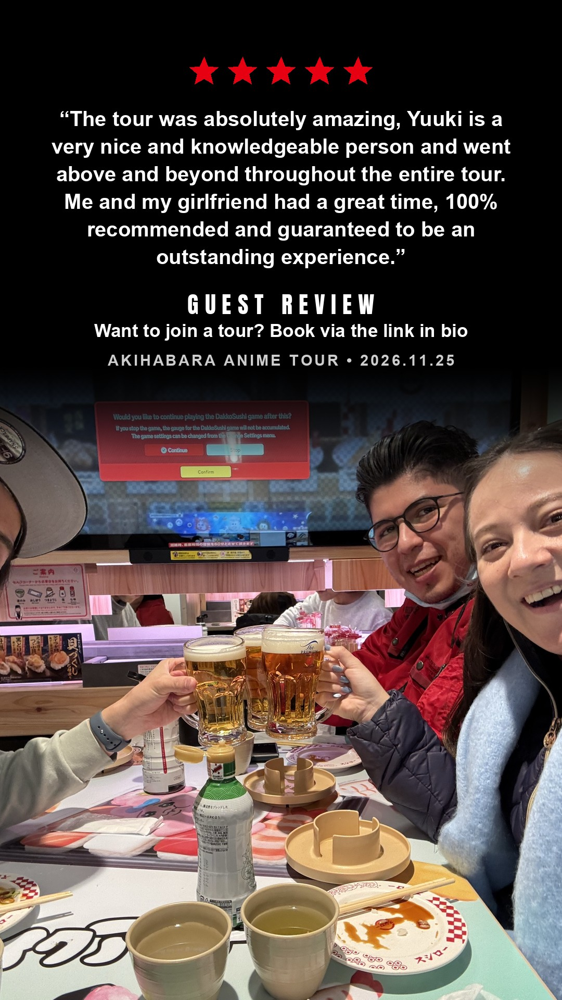
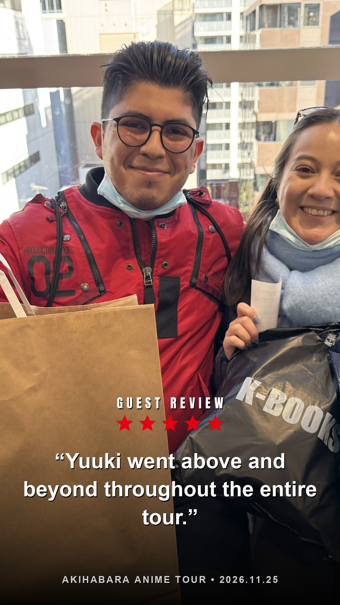
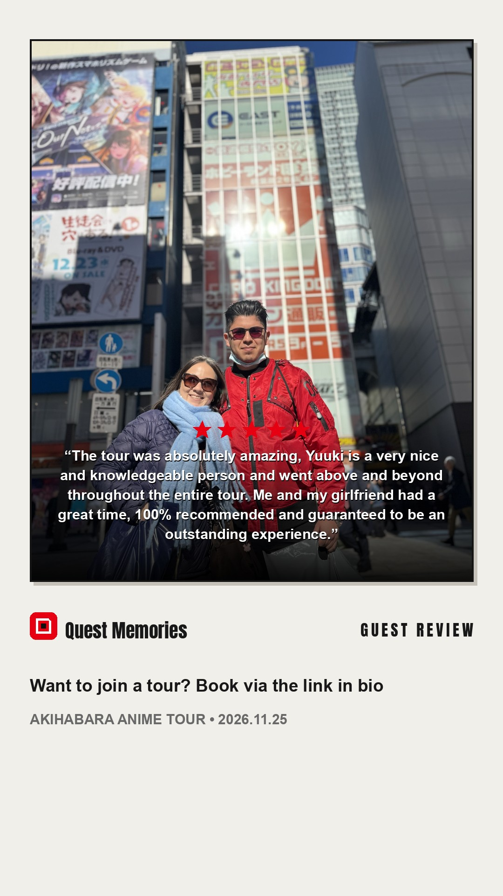

レビューストーリーに「写真全面＋グラデ黒帯＋星＋引用」のテイストをどう入れるか、入れ方の違いで作った実物サンプル5案です。題材は Victor Gonzalez さんの Google ★5 レビュー（AKIHABARA ANIME TOUR／2026.11.25）。番号で選んでください。

見本どおり
写真1枚フルブリード＋下グラデ帯に星と引用全文。見本の形をそのまま再現した基準案

コラージュ＋帯
上部は写真3枚コラージュ、下部グラデ帯に星＋引用。賑やかさと説得力を両立

帯・上配置
黒帯を上に置いて引用を先に見せ、顔は下に。視線が文から写真へ流れる

短文特化
一番強い一文だけを特大で。帯は下部だけに絞り、写真を広く見せる潔い形

フレーム型
紙色フレームに写真を収め、Quest Memories のロゴを小さく添えた、今のブランド寄りの形